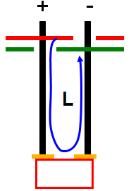
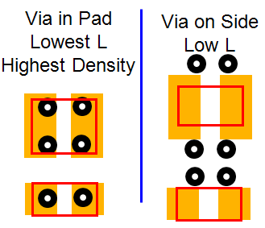
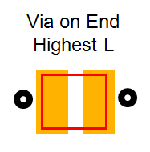

Footprint recommendations for ceramic and bulk capacitors
The following layout solutions are best practice recommendations to increase UHC4 / UHC4T stability and to achieve a wider bandwidth.
Reduce loop inductance
Inductance (L) increases with + and - via separation.

Recommended placement for ceramic capacitors
Lower equivalent serial inductance (ESL) helps to increase bandwidth.

Recommended placement for bulk tantalum and electrolytic capacitors
Higher equivalent serial inductance (ESL) helps to support UHC4 / UHC4T stability.

Functional changes
- Introduced in SmarTest 7.2.1